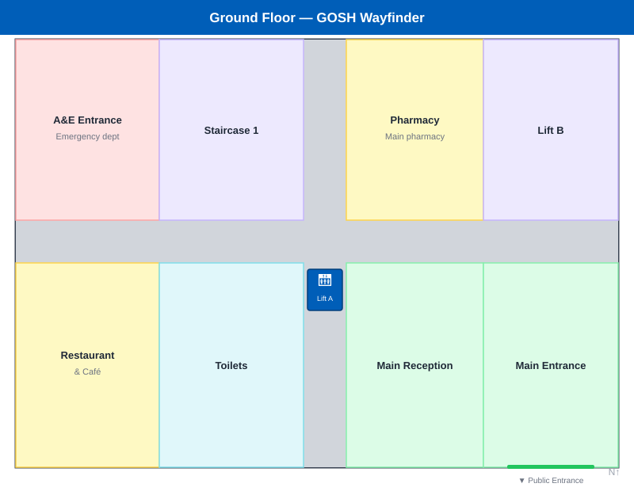

A · Landing — src/app/page.tsx
Map a place, or find your way through one.
B · Navigate home — WayfinderApp.tsx

You are on: Ground Floor
C · Route preview — BottomSheet.tsx
Russell Square Station
Piccadilly line · Bernard St entrance
D · Search — SearchModal.tsx
Quick access
{{ row.name }}
{{ row.meta }}
All locations
{{ row.name }}
{{ row.meta }}
E · Places — VenuePicker.tsx
Saved on this device. Sign-in isn't set up on this server yet.
Map a new place
Public or private — you choose who can see it
Public places
GOSH
Great Ormond Street Hospital · Public
Your places
{{ p.name }}
{{ p.meta }}
F · Map mode — /map with survey FABs
You are on: Ground Floor